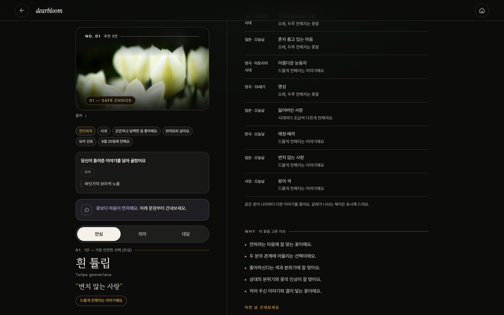

AI는 마음을 읽고,
검증된 데이터는 사실을 지킵니다
사실은 데이터에서,
AI는 해석과 표현에서 사용합니다.
AI가 하는 일
- “첫눈을 함께 봤어요” 같은 자유 문장 이해
- 취향·추억·분위기 단서 추출
검증 데이터·엔진이 하는 일
- 꽃말과 출처 확인
- 고양이·강아지 안전성 판단

크게 위험한 꽃은 추천 전 제외

AI가 출처 없는 꽃말을 만들지 않음